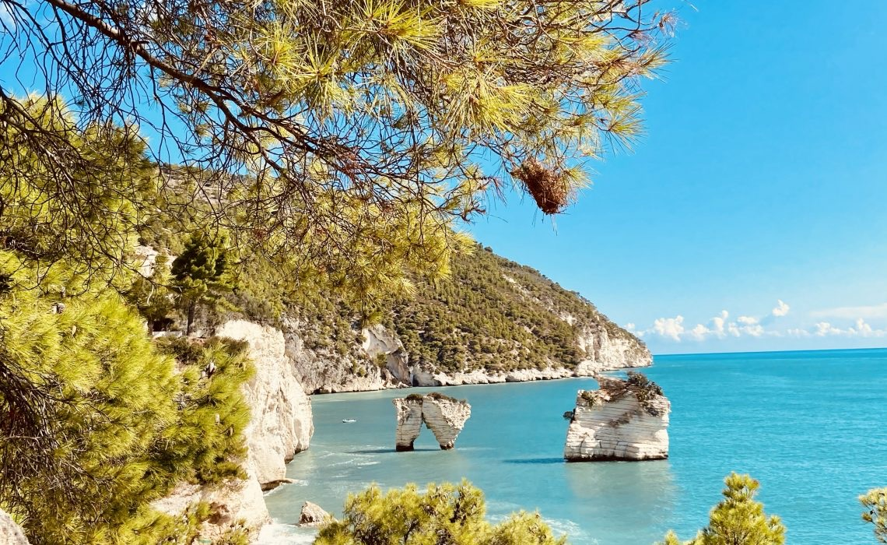

Sette giorni. È il tempo minimo per iniziare a capire il Gargano, e il tempo massimo che la maggior parte di voi ha a disposizione. Questo itinerario è costruito attorno a un'idea precisa: Manfredonia come base fissa per tutta la settimana. Non perché non ci siano altri posti dove dormire, ma perché è la scelta più intelligente dal punto di vista logistico ed economico.
I prezzi di Vieste e Peschici in alta stagione possono essere doppi rispetto a Manfredonia. I parcheggi in quei borghi sono caotici. Tornare ogni sera allo stesso posto vi dà un senso di appartenenza al territorio che nessuna guida può vendervi. Da Manfredonia raggiungete Vieste in meno di un'ora, Monte Sant'Angelo in 25 minuti, la Foresta Umbra in 40 minuti. Il Gargano è più piccolo di quanto sembri sulla cartina.
Giorno 1: Arrivo a Manfredonia e scoperta del centro storico
Arrivate nel pomeriggio, non di fretta. Depositate i bagagli a Casa e Bottega e uscite a piedi verso il centro. Il centro storico di Manfredonia non è spettacolare nel senso turistico del termine, ma ha una sua dignità tranquilla: il Castello Svevo si affaccia sul porto con i suoi bastioni rosati, il lungomare profuma di salsedine e frittura. Cena in uno dei ristoranti sul porto — ordinate i frutti di mare locali, non sbagliete.
Se siete stanchi del viaggio, va benissimo così. Non forzate il primo giorno. Sedete al tramonto sul lungomare con un bicchiere di primitivo e guardate il sole che scende sul golfo: è già un'esperienza completa.
Giorno 2: Siponto, il Castello e il Museo Nazionale

Iniziate la mattina con la Basilica di Santa Maria Maggiore di Siponto, a pochi chilometri dal centro. È una delle chiese romaniche più belle della Puglia, costruita nell'XI secolo su un precedente sito paleocristiano. L'installazione contemporanea di Edoardo Tresoldi — una struttura in rete metallica che riproduce la forma dell'antica basilica scomparsa — è una delle cose più straordinarie che vedrete in questo viaggio. Abbiamo scritto una guida completa alla visita di Siponto e Tresoldi: orari, come arrivare e cosa aspettarsi. Arrivate entro le 9:30 per evitare i gruppi.
Nel pomeriggio risalite al Castello Svevo di Manfredonia e al Museo Nazionale del Gargano. Le stele daunie — sculture funerarie dell'VIII-VI secolo a.C. — sono uniche al mondo e quasi sconosciute al grande turismo. Dedicate almeno un'ora e mezza: escono dalla storia con una forza silenziosa che sorprende.
Giorno 3: Monte Sant'Angelo e la Foresta Umbra
Partite alle 8:30. Monte Sant'Angelo è a 25 minuti da Manfredonia ma sembra un altro mondo: un borgo medievale arroccato a 800 metri di quota, intorno al Santuario di San Michele Arcangelo, sito UNESCO e meta di pellegrinaggi da 1.500 anni. Scendete nella grotta — la grotta vera, dove secondo la tradizione apparve l'arcangelo — prima che arrivino i pullman turistici. Il silenzio al mattino presto è parte dell'esperienza.
Tornando, fate una deviazione per la Foresta Umbra. Sono 11.000 ettari di bosco di faggi, cerri e abeti nel cuore del Parco Nazionale del Gargano. Il Centro Visitatori ha sentieri segnalati di varie difficoltà. Portate acqua e scarpe comode: anche solo un'ora di camminata nel bosco, con il silenzio e la luce filtrata dai faggi, resetta completamente la testa.
Giorno 4: Vieste, il borgo arroccato più bello
Partite dopo colazione, verso le 9. La SS89 costiera da Manfredonia a Vieste è una delle strade panoramiche più belle d'Italia: curve sul mare, falesie bianche, piccole insenature. Arrivate a Vieste e parcheggiate ai parcheggi esterni (il centro è chiuso al traffico). I caruggi del centro storico sono un labirinto bianco dove perdersi è il punto: case appoggiate le une alle altre, panni stesi, gatti che dormono sui gradini.
Visitate il Pizzomunno — la guglia calcarea di 25 metri che emerge dal mare — e la Cattedrale di Santa Maria Assunta (XI secolo). A pranzo mangiate in uno dei ristoranti sul belvedere: il pesce è freschissimo. Nel pomeriggio, se la stagione lo permette, scendete alla Spiaggia del Castello. Tornate a Manfredonia per le 19:30 per l'aperitivo sul porto.
Giorno 5: Peschici, Rodi Garganico e la costa nord
Peschici è a 75 km da Manfredonia, circa 70 minuti di guida. È un altro borgo bianco arroccato su un promontorio, ma meno turistico e più autentico di Vieste. Le sue stradine scendono verso il mare in modo quasi verticale. Fermatevi al belvedere e guardate la costa: è la Puglia che non ti aspetti.
Proseguite fino a Rodi Garganico, un porto di pescatori ancora genuino dove si trovano i famosi agrumi garganici — arance e limoni profumatissimi. Il mercato del pesce al porto è aperto al mattino. San Menaio e Lido del Sole sono spiagge lunghe e sabbiose, meno conosciute ma bellissime. Rientrate per cena a Manfredonia.
Giorno 6: Mattinata, Baia delle Zagare e spiaggia libera
Mattinata è a 30 km da Manfredonia, nel cuore della costa sud del Gargano. Il paese in sé è tranquillo e non molto turistico, ma la costa intorno è straordinaria. La Baia delle Zagare è una delle spiagge più fotografate d'Italia: due faraglioni calcarei che emergono dal mare turchese, sabbia bianca, acque che vanno dal verde al cobalto. In estate è affollata — arrivate entro le 9 per trovare posto.
Se preferite qualcosa di più selvaggio, la zona di Baia di Vignanotica (a nord di Mattinata) è raggiungibile a piedi da un sentiero nel bosco: 30 minuti di cammino, nessun stabilimento balneare, solo scogliere e mare cristallino. Questo è il giorno del riposo vero: niente monumenti, solo acqua e cielo.
Giorno 7: Ultimo giorno a Manfredonia
Se partite nel pomeriggio o la sera, usate il mattino bene. Andate al mercato del pesce al porto alle 6:30-7:00: vedrete la città svegliarsi, i pescatori che tornano, le cassette di paranza, i gamberi ancora vivi. Fate colazione in un bar locale con un cornetto alla crema e un caffè lungo.
Passate per le strade dove avete camminato una settimana fa: adesso sapete i nomi dei vicoli, conoscete il barista, sapete dove si parcheggia. Questo è il momento più bello del viaggio: quando un posto smette di essere uno sfondo e diventa un luogo che vi appartiene un poco.
Consigli pratici per organizzare il viaggio
Prenotate l'alloggio a Manfredonia con almeno 2-3 mesi di anticipo se viaggiate in luglio o agosto. Le camere disponibili in centro sono poche rispetto alla domanda estiva. Fuori dall'alta stagione potete trovare disponibilità anche a poche settimane dall'arrivo.
Per i pasti, non prenotate tutto in anticipo. Parte del piacere di Manfredonia è scoprire dove mangiare camminando. Abbiamo raccolto i posti dove mangiano davvero i locali: non li trovate su TripAdvisor. Le trattorie del porto aprono a pranzo dalle 12:30 e chiudono quando finiscono i coperti: arrivate presto. La sera, le 20:30-21:00 è l'orario locale per la cena.
Portatevi scarpe comode per camminare nei caruggi di Vieste e Monte Sant'Angelo: il selciato è sconnesso e ripido. Per le spiagge rocciose, le scarpette da scoglio fanno la differenza. Crema solare ad alta protezione: il sole del Gargano è forte anche in giugno.
Domande frequenti sul Gargano in 7 giorni
Quanti giorni servono per visitare il Gargano?
Il minimo per un'esperienza completa è 5-7 giorni. Con una settimana riuscite a vedere Manfredonia, Monte Sant'Angelo, Vieste, Peschici e le spiagge più belle senza fretta. Con meno giorni dovrete scegliere e rinunciare a qualcosa.
Conviene spostarsi ogni notte o fare base fissa al Gargano?
La base fissa a Manfredonia è la scelta più conveniente: risparmiate sulle notti (non pagate i prezzi premium di Vieste e Peschici in estate), evitate di fare e disfare i bagagli ogni giorno, e le distanze sono contenute. Da Manfredonia raggiungete qualsiasi punto del Gargano in meno di 90 minuti.
Si può visitare il Gargano senza auto?
È possibile ma difficoltoso. I bus Ferrovie del Gargano collegano i centri principali ma con frequenze ridotte e orari non sempre comodi. Per la Foresta Umbra, le spiagge più isolate e i percorsi tra i borghi, l'auto è di fatto indispensabile. In alternativa, alcuni tour operator locali organizzano escursioni giornaliere con minibus da Manfredonia.
Qual è il periodo migliore per una settimana al Gargano?
Giugno e settembre sono i mesi ideali: il mare è caldo, le spiagge sono vivibili, i prezzi sono più bassi e c'è meno folla. Luglio e agosto sono bellissimi ma affollati e con caldo intenso. Maggio e ottobre sono ottimi per trekking e natura: la Foresta Umbra in autunno è uno spettacolo di colori.
Quanto costa una settimana al Gargano?
Con base fissa a Manfredonia, una settimana in due può costare tra 800 e 1.300 euro tutto compreso (alloggio, pasti, benzina, ingressi). I costi salgono sensibilmente se si sceglie di dormire a Vieste o Peschici in luglio-agosto, dove i prezzi degli alloggi possono raddoppiare.